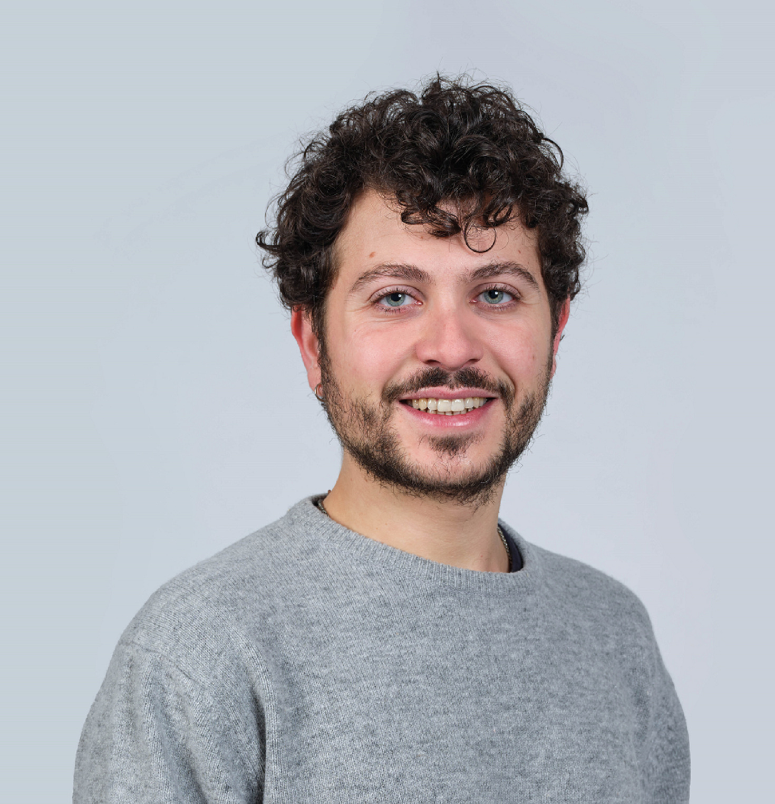

People
Team
Researchers working together to understand the foundations of democratic consent.
Principal Investigator

Ignacio Jurado
Distinguished Research Fellow
IPP-CSIC, Madrid
D.Phil, University of Oxford
ignaciojurado.com →
Research team

Álvaro Canalejo-Molero
Postdoctoral Researcher
IPP-CSIC, Madrid
PhD, European University Institute
acanalejo.github.io →
Josep Serrano-Serrat
Postdoctoral Researcher
IPP-CSIC, Madrid
PhD, University Carlos III of Madrid
serranoserrat.github.io →
Project Collaborators
Simon Chauchard
University Carlos III of Madrid
Sandra León
IPP-CSIC, Madrid

Fernando Mello
University Carlos III of Madrid
Lluís Orriols
University Carlos III of Madrid